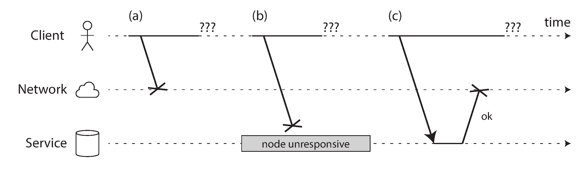
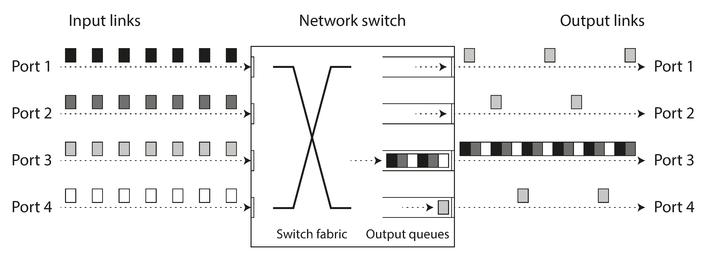
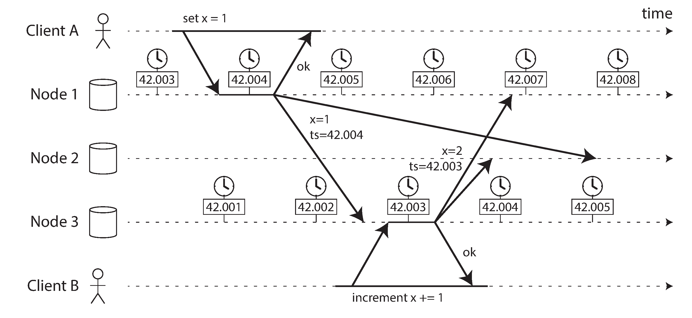
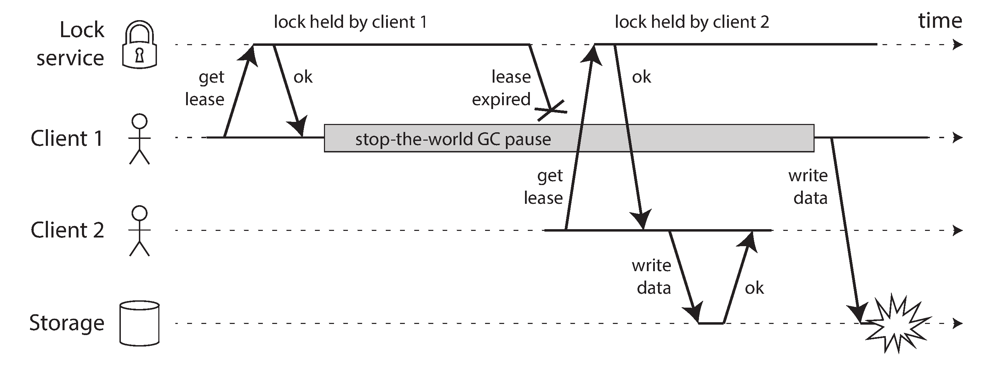
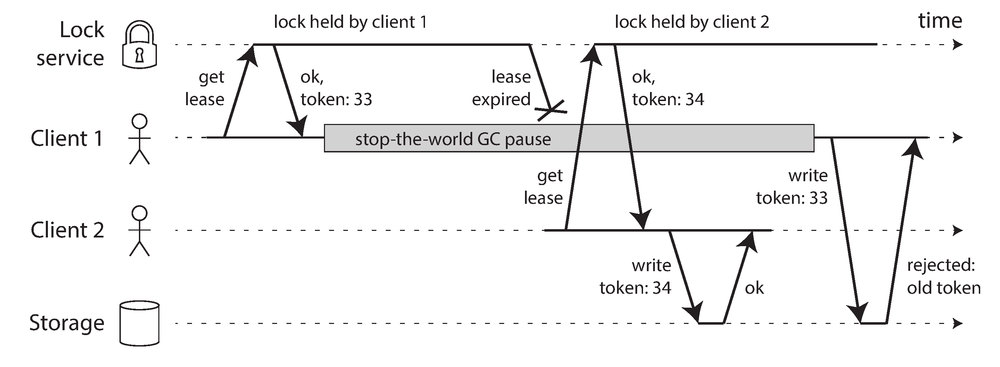

"Hey I just met you
The network's laggy
But here's my data
So store it maybe"
— Kyle Kingsbury, Carly Rae Jepsen and the Perils of Network Partitions (2013)
This chapter: maximum pessimism. Anything that can go wrong will go wrong.
What We'll Cover
🌐 Unreliable Networks
Packet loss, delays, timeouts, congestion, and why there's no "correct" timeout value
⏰ Unreliable Clocks
Time-of-day vs monotonic, NTP drift, TrueTime, and why LWW is dangerous
🧠 Knowledge & Truth
Quorums, fencing tokens, Byzantine faults, and system models
Faults and Partial Failures
The defining characteristic of distributed systems
Single Computer vs Distributed System
🖥️ Single Computer
Deterministic: same input → same output
Either fully functional or entirely broken
Hardware hides messy physics → idealized model
Crash = total failure (kernel panic, BSOD)
🌐 Distributed System
Nondeterministic: may work, may fail, may be slow
Partial failure: some parts broken, others fine
You may not even know if something succeeded!
Must design for partial failure
Cloud Computing vs Supercomputing
🏗️ Supercomputer (HPC)
Specialized hardware, very reliable nodes
Shared memory, RDMA
Handles partial failure → total failure
Checkpoint + restart on failure
☁️ Cloud / Internet Services
Commodity hardware, higher failure rates
IP/Ethernet networking
Must serve users 24/7 — can't stop for repair
Tolerate faults, keep running
💡 In a system with thousands of nodes, something is always broken. We must build reliable systems from unreliable components.
Unreliable Networks
Shared-nothing systems communicate only via the network
What Can Go Wrong?
When you send a request and get no response:
Request was lost 📨
Request is queued, will arrive later
Remote node has crashed
Remote node is paused (GC)
Response was lost
Response is delayed
All indistinguishable from sender's perspective!

Network Faults in Practice
🏢 One study: 12 network faults/month in a medium datacenter
🦈 Sharks bite undersea cables (yes, really!)
🔌 Redundant networking doesn't help against human error (misconfigured switches)
📡 Network interface drops inbound but sends outbound — one direction fails!
☁️ EC2 known for frequent transient glitches
Network partitions: when part of the network is cut off from the rest. Even if rare, software must handle them!
"If the error handling of network faults is not defined and tested, arbitrarily bad things could happen."
Detecting Faults
Automatic fault detection is needed (load balancers, leader election), but it's hard:
✅ Sometimes You Get Feedback
Process crashed → OS sends RST/FIN
Process killed → script can notify others (HBase)
Switch management → detect link failures
Router → ICMP Destination Unreachable
❌ But You Can't Count On It
TCP ACK ≠ app processed it
No response → could be anything
Only option: timeout
Need positive response from application itself
Timeouts and Unbounded Delays
There is no "correct" timeout value
The Timeout Dilemma
⏳ Long Timeout
Long wait until node declared dead
Users see errors/waiting
Delay in failover
⚡ Short Timeout
Faster fault detection
Risk of false positives
Node just slow → declared dead → load transferred → cascading failure!
Ideal: timeout = 2d + r (d = max network delay, r = max processing time). But networks have unbounded delays!
Better approach: Phi Accrual failure detector — automatically adjusts timeout based on observed response times. Used by AkkaCassandra
Network Congestion & Queueing
The main source of variable delays:
📦 Switch queue full → packet dropped → retransmit
🖥️ OS queue → CPU busy, request waits
☁️ VM paused → data buffered by hypervisor
🚦 TCP flow control → sender queues before network
Noisy neighbors in shared infrastructure make delays unpredictable.

Synchronous vs Asynchronous Networks
📞 Telephone (Circuit-Switched)
Fixed bandwidth reserved per call
No queueing → bounded delay
16 bits every 250μs (ISDN)
Wastes capacity when idle
🌐 Internet (Packet-Switched)
Bandwidth shared dynamically
Queueing → unbounded delay
Optimized for bursty traffic
Better utilization = cheaper
Variable delays are not a law of nature — they're a cost/benefit trade-off. Static partitioning = guaranteed latency but expensive. Dynamic sharing = cheaper but variable.
Unreliable Clocks
Each machine has its own notion of time
Two Types of Clocks
🕐 Time-of-Day Clock
Returns wall-clock time (epoch-based)
clock_gettime(CLOCK_REALTIME)
System.currentTimeMillis()
Synced via NTP
⚠️ Can jump backward!
⚠️ Not suitable for measuring duration
⏱️ Monotonic Clock
Always moves forward (guaranteed)
clock_gettime(CLOCK_MONOTONIC)
System.nanoTime()
NTP may slew rate (±0.05%) but never jump
✅ Good for measuring elapsed time
⚠️ Absolute value is meaningless
Clock Synchronization Problems
📉 Quartz drift: ~200 ppm (Google) → 6ms drift per 30s sync, 17s drift per day
⏮️ NTP reset: clock too far off → forcibly reset → time jumps backward!
🔥 Firewalled from NTP → drift goes unnoticed for a long time
🌐 NTP accuracy limited by network delay: ≥35ms error over internet
🤥 Some NTP servers are wrong or misconfigured
⏰ Leap seconds: minute with 59 or 61 seconds → crashed many systems
☁️ VM clock is virtualized → pauses cause time jumps
MiFID II requires financial trading clocks synced to within 100μs of UTC — requires GPS receivers + PTP.
Relying on Synchronized Clocks
Incorrect clocks → silent data loss, not dramatic crashes
Timestamps for Ordering Events
Multi-leader replication with LWW (Last Write Wins):
Client A writes x=1 on Node 1 (t=42.004)
Client B writes x=2 on Node 3 (t=42.003)
B is causally later, but has earlier timestamp!
Node 2 picks x=1 as "most recent" → B's write is lost 💀
Clock skew: only 3ms! Still causes data loss.

Clock Confidence Intervals & TrueTime
A clock reading isn't a point in time — it's a range with uncertainty.
😕 Most Systems
clock_gettime() returns a single value. No indication of uncertainty!
Microsecond digits may be meaningless if error is ±100ms.
✨ Google TrueTime
Returns [earliest, latest] — the confidence interval.
GPS + atomic clocks → uncertainty typically ~7ms.
Spanner waits for interval length before commit to ensure causal ordering!
💡 Logical clocks (incrementing counters) are a safer alternative — they track relative ordering, not wall-clock time.
Process Pauses
A thread can be paused for minutes without knowing
The Lease Problem
while (true) {
request = getIncomingRequest();
if (lease.expiryTimeMillis - System.currentTimeMillis() < 10000)
lease = lease.renew();
if (lease.isValid())
process(request); // ← What if paused HERE for 15 seconds?
}
Two bugs:
Comparing remote expiry time with local clock (clock skew!)
Thread could pause for 15 seconds between isValid() check and process() → lease expired, another node is leader, but this node still processes!
Why Can a Thread Pause?
☕ GC stop-the-world: HotSpot JVM pauses can last minutes
☁️ VM suspended: live migration, paused while another VM runs
💻 Laptop lid closed: OS suspends execution
🔀 Context switches: OS/hypervisor switches to other threads/VMs (steal time)
💾 Disk I/O: synchronous access, network filesystem latency
⏸️ SIGSTOP signal: Ctrl-Z in shell, accidental by ops engineer
The paused node doesn't know it was paused. The rest of the world moved on and may have declared it dead!
Mitigating GC Pauses
🏥 Treat GC Like Planned Downtime
Warn app before GC → stop accepting requests → drain in-flight requests → run GC → resume.
Hides pauses from clients. Used in latency-sensitive financial trading.
♻️ Short-Lived Objects Only
Use GC only for young generation (fast). Restart process periodically before long-lived objects accumulate.
Rolling restart: one node at a time, shift traffic away first.
⚠️ Hard real-time (RTOS, safety-critical systems) guarantees bounded response time, but is very expensive and restrictive. Not practical for most data systems.
Knowledge, Truth, and Lies
A node cannot trust its own judgment
The Truth Is Defined by the Majority
A node can't know anything for sure — only make guesses based on messages received (or not).
Three nightmare scenarios:
🔇 Asymmetric fault: node receives messages but its outgoing ones are dropped → declared dead while kicking and screaming "I'm not dead!"
⏸️ GC pause: node paused 1 minute → declared dead → wakes up and doesn't realize it was gone
🗳️ A quorum decides: if majority says you're dead, you're dead. Even if you feel fine.
Major decisions require a quorum (majority vote) to reduce dependence on any single node.
Incorrect Lock Implementation
Client 1 gets a lease (lock) on a file. Then it pauses (GC).
Client 1 acquires lease
Client 1 pauses (GC) ⏸️
Lease expires
Client 2 acquires lease, writes to file
Client 1 wakes up, thinks lease is still valid
Client 1 writes to file → CORRUPTION! 💀
Real bug: HBase had this problem.

Fencing Tokens
Solution: lock server returns a monotonically increasing token with each lease.
Client 1 gets lease with token 33
Client 1 pauses ⏸️ → lease expires
Client 2 gets lease with token 34
Client 2 writes with token 34 ✅
Client 1 wakes, writes with token 33
Storage rejects token 33 (already saw 34) ✅
ZooKeeper: zxid or cversion works as fencing token.

Byzantine Faults
When nodes lie (and when we don't worry about it)
Byzantine Fault Tolerance
Fencing tokens handle inadvertent errors. But what if nodes deliberately lie?
🚀 When It Matters
Aerospace: radiation corrupts CPU/memory → must tolerate
This book assumes honest but unreliable nodes. Weak protections still help: checksums, input validation, multiple NTP servers.
System Models
Formalizing what can go wrong
Timing Models
Synchronous
Bounded network delay, process pauses, and clock error.
Not realistic for most systems.
Partially Synchronous
Behaves synchronously most of the time, but bounds are occasionally exceeded.
Most realistic model! ✅
Asynchronous
No timing assumptions at all. No clocks, no timeouts.
Very restrictive.
Node Failure Models
Crash-Stop
Node crashes → gone forever. Never comes back.
Crash-Recovery
Node crashes, may restart later. Stable storage survives; in-memory state lost.
Most realistic! ✅
Byzantine
Nodes can do anything, including lying and sending fake messages.
For real systems: partially synchronous + crash-recovery is the standard model.
Safety vs Liveness
🛡️ Safety
"Nothing bad happens"
If violated, we can point to the exact moment
Cannot be undone
Must hold always, even if everything fails
Example: uniqueness, monotonic sequence
🌱 Liveness
"Something good eventually happens"
May not hold now, but there's hope
Often includes "eventually"
Can have caveats (majority alive, network recovers)
Example: availability, eventual consistency
Summary
Embracing the chaos of distributed systems
Chapter 8 Key Takeaways
The Three Enemies
🌐 Networks: packets lost, delayed, reordered. No "correct" timeout.
⏰ Clocks: drift, jump, skew. Silent data loss. LWW is dangerous.
⏸️ Processes: GC pauses, VM suspension. Node doesn't know it was paused.
How We Cope
🗳️ Quorums: majority decides truth
🔑 Fencing tokens: monotonic tokens prevent stale writes
📊 System models: formalize assumptions to prove algorithms correct
🔍 Detect, don't prevent: build reliable from unreliable
Next chapter: solutions! Algorithms for consistency and consensus despite all these problems.
Questions?
Designing Data-Intensive Applications • Chapter 8
MCQ Quiz
100 Questions • Test Your Knowledge
Q1Distributed Problems
What is the central theme of Chapter 8?
A) Distributed systems are easy
B) Everything that can go wrong in a distributed system, and why it's fundamentally different from single-node
C) How to build a network
D) Database query optimization
Answer: B) Chapter 8 is a thoroughly pessimistic chapter about everything that can go wrong in a distributed system.
Q2Single Node
What happens when hardware fails on a single node?
A) Partial failure
B) The system either works or crashes entirely — total failure, not partial
C) Nothing happens
D) Only software fails
Answer: B) On a single computer, things either work or they don't. If there's a hardware problem, the whole system tends to crash.
Q3Partial Failure
What is unique about distributed system failures?
A) Complete failures only
B) Partial failures — some parts work while others fail in unpredictable ways
C) Failures never happen
D) Only network failures
Answer: B) In a distributed system, partial failures are common and nondeterministic — some parts work while others break.
Q4Nondeterministic
Why are distributed system failures nondeterministic?
A) They follow a pattern
B) You may not even know whether something succeeded or failed because messages take variable time
C) They are predictable
D) They happen at set intervals
Answer: B) You may not know if an operation succeeded because the response might be lost. This nondeterminism is fundamental.
Q5Supercomputers
How do supercomputers handle failure differently?
A) They ignore failures
B) They treat partial failure as total failure, checkpointing and restarting from the last checkpoint
C) They use distributed consensus
D) They replicate everything
Answer: B) Supercomputers use checkpointing: if a node fails, the entire job is restarted from the last checkpoint.
Q6Internet Services
Why can't internet services handle failure like supercomputers?
A) They can
B) Internet services must tolerate partial failures because users expect always-on availability
C) They lack hardware
D) They don't use networks
Answer: B) Internet-facing services must be always available. There is no option to stop everything and restart from a checkpoint.
Q7Unreliable Networks
What kind of network do most distributed systems use?
A) Reliable synchronous networks
B) Asynchronous packet networks — no guarantees on timing or delivery
C) Dedicated circuits
D) Peer-to-peer mesh
Answer: B) Most distributed systems use asynchronous packet networks with no guarantees about when a message arrives or if it arrives at all.
Q8Request Fate
When you send a network request, what could happen?
A) It always arrives
B) Request lost, queued, remote node crashed, response lost, or response delayed
C) Only success or failure
D) It's always instant
Answer: B) Many things can go wrong: request lost, queued and delayed, remote node failed, response lost, or response delayed.
Q9Timeout
Why are timeouts the only reliable way to detect network faults?
A) Timeouts are perfect
B) There is no way to distinguish between lost requests, crashed nodes, and slow responses — you can only wait and give up
C) Timeouts never fail
D) Direct ping works better
Answer: B) Since you can't distinguish loss, crash, and delay, the only option is to wait for a timeout and declare failure.
Q10Network Partition
What is a network partition?
A) Splitting data across nodes
B) When part of the network is cut off from the rest — nodes can't communicate with each other
C) Dividing a database
D) Splitting a file
Answer: B) A network partition (netsplit) occurs when one part of the network is cut off from the rest.
Q11Real Faults
How common are network problems in real datacenters?
A) They never happen
B) Surprisingly common — one study at medium-sized datacenters found about 12 network faults per month
C) Once a year
D) Only in theory
Answer: B) A study of medium-sized datacenters found about 12 network faults per month, half of which disconnected a single machine.
Q12Deliberate Faults
Why does Netflix intentionally cause network problems (Chaos Monkey)?
A) To test users' patience
B) To verify that the system can tolerate and recover from network faults
C) To reduce costs
D) To test new hardware
Answer: B) Deliberately triggering network problems ensures the fault-tolerance machinery is continually exercised and tested.
Q13Network Detection
Can network faults be automatically detected?
A) Always and perfectly
B) Sometimes — if a process crashes the OS may send a RST/FIN, but you can't count on it
C) Never
D) Only with special hardware
Answer: B) In some cases you get feedback (RST/FIN packets, ICMP unreachable), but in general you can't reliably determine fault type.
Q14Timeout Length
What is the problem with setting timeouts?
A) No problem exists
B) Too short: false positives (declares nodes dead prematurely). Too long: long wait before detecting actual failure
C) They always work perfectly
D) Only one correct value exists
Answer: B) A short timeout detects faults faster but risks false positives. A long timeout means a longer wait before declaring a node dead.
Q15Premature Declaration
What happens if you prematurely declare a node dead?
A) No consequence
B) Its responsibilities are transferred unnecessarily, causing extra load and potential cascading failures
C) The node recovers faster
D) Data is deleted
Answer: B) Declaring a node dead prematurely transfers its load to other nodes, potentially causing cascading failures if those nodes are also overloaded.
Q16Network Queuing
What causes variable network delays?
A) Nothing — delays are constant
B) Queuing at multiple levels: network switch, OS buffer, TCP flow control, VM pauses
C) Only distance matters
D) Only bandwidth matters
Answer: B) Delays come from network switch queues, OS receive buffers, TCP flow control backpressure, and VM scheduling.
Q17TCP vs UDP
Why do TCP retransmissions add to latency?
A) They don't
B) When a packet is lost, TCP waits for a timeout then retransmits, adding to the overall delay
C) TCP is faster than UDP
D) TCP never retransmits
Answer: B) TCP automatically retransmits lost packets, but the timeout and retransmission add significant delay.
Q18Telephone Network
How do traditional telephone networks differ from packet networks?
A) They're identical
B) Telephone networks use circuit-switching with reserved bandwidth and bounded delay — guaranteed quality
C) They use packets
D) They're slower
Answer: B) Telephone networks establish a circuit with guaranteed, fixed bandwidth for the duration of the call.
Q19Why Not Circuits
Why don't datacenters use circuit-switched networks?
A) They're too expensive
B) Ethernet and IP are optimized for bursty traffic — using circuits would waste bandwidth during idle periods
C) Circuits don't exist
D) Circuits are too fast
Answer: B) Bursty data traffic (requesting a web page, sending an email) uses the network intermittently, so circuit-switching would waste bandwidth.
Q20Bounded Delay
Could we build networks with bounded delay?
A) Impossible
B) Possible with QoS and admission control, but currently not enabled in most multi-tenant datacenters
C) Already done everywhere
D) Only for voice
Answer: B) It's technically possible (QoS, admission control), but currently there's no general mechanism in multi-tenant datacenters.
Q21Clock Types
What two types of clocks do computers have?
A) Fast and slow clocks
B) Time-of-day clocks and monotonic clocks
C) Digital and analog clocks
D) Local and remote clocks
Answer: B) Computers have time-of-day clocks (wall-clock time) and monotonic clocks (for measuring elapsed time).
Q22Time-of-Day
What does a time-of-day clock return?
A) CPU cycles
B) The current date and time according to a calendar (e.g., seconds since epoch)
C) Elapsed time since boot
D) Temperature
Answer: B) Time-of-day clocks return the current date and time according to some calendar, like seconds since epoch.
Q23Time-of-Day Problem
What can happen with time-of-day clocks?
A) Always accurate
B) They can jump forward or backward when synced with NTP
C) They never need sync
D) They're monotonic
Answer: B) If the local clock is too far ahead of the NTP server, it may be forcibly reset — jumping backward.
Q24Monotonic Clock
What is a monotonic clock used for?
A) Telling the current time
B) Measuring elapsed time (duration) — it always moves forward
C) Setting alarms
D) Network synchronization
Answer: B) A monotonic clock is suitable for measuring durations because it's guaranteed to always move forward.
Q25Monotonic Limitation
What can't you do with monotonic clocks?
A) Measure duration
B) Compare values between different machines — each machine's monotonic clock starts at different values
C) Use them at all
D) Measure milliseconds
Answer: B) Monotonic clock values are meaningless across machines. They only measure elapsed time on a single machine.
Q26NTP
What is NTP?
A) Network Transfer Protocol
B) Network Time Protocol — synchronizes machine clocks with time servers
C) Node Transport Protocol
D) Networked Timestamp Protocol
Answer: B) NTP (Network Time Protocol) synchronizes computer clocks with dedicated time servers.
Q27NTP Accuracy
How accurate is NTP in practice?
A) Always exact
B) At best within tens of milliseconds over the internet; better on local networks but still limited
C) Nanosecond precision
D) Only within hours
Answer: B) NTP can achieve accuracy within tens of milliseconds on the public internet, and within a few milliseconds on a local network.
Q28Quartz Drift
How much can a computer's quartz clock drift?
A) Never drifts
B) Up to 200 ppm (parts per million) — about 6 seconds per day for a typical server
C) Exactly 1 second per year
D) Only when powered off
Answer: B) Computer quartz clocks can drift at 200 ppm, meaning up to 17 seconds drift if NTP sync is delayed.
Q29Clock Ordering
Why shouldn't you use timestamps for ordering events?
A) Timestamps are always ordered
B) Clock skew between machines means a 'later' timestamp on one machine may be earlier in real time
C) Timestamps are too precise
D) Only databases use timestamps
Answer: B) Due to clock skew, a timestamp from machine A may be 'earlier' than one from machine B even though the event on A actually happened later.
Q30LWW Clocks
What danger exists in using last-write-wins (LWW) with timestamps?
A) No danger
B) A write with a lagging clock is silently dropped, even though it happened later in reality
C) Both writes are kept
D) Clocks are always synchronized
Answer: B) LWW with timestamps can silently discard writes from nodes whose clocks are slightly behind, without any error reported.
Q31Logical Clocks
What are logical clocks?
A) Hardware clocks
B) Counters (like Lamport timestamps) that track relative ordering of events rather than wall-clock time
C) GPS clocks
D) Atomic clocks
Answer: B) Logical clocks measure relative ordering of events using counters, without depending on synchronized wall-clock time.
Q32Physical Clocks
What do physical clocks measure?
A) Event ordering
B) Actual elapsed time (wall-clock time), subject to synchronization issues
C) CPU cycles
D) Network hops
Answer: B) Physical clocks (time-of-day and monotonic) measure actual elapsed time but are subject to drift and synchronization errors.
Q33Confidence Interval
What should timestamps really be?
A) An exact point in time
B) A range/confidence interval, not a single point — the true time lies within the range
C) A random number
D) A hash value
Answer: B) Due to clock uncertainty, a timestamp should be a confidence interval: the actual time lies within [earliest, latest].
Q34Google TrueTime
What does Google's TrueTime API return?
A) A Unix timestamp
B) A confidence interval [earliest, latest] for the current time
C) A logical clock value
D) GPS coordinates
Answer: B) TrueTime returns a confidence interval, and Google uses atomic clocks and GPS in each datacenter to keep the interval small (usually < 7ms).
Q35Spanner
How does Google Spanner use TrueTime for transaction ordering?
A) It doesn't use timestamps
B) It waits for the confidence interval to pass before committing, ensuring transaction ordering matches real time
C) It uses logical clocks
D) It uses NTP
Answer: B) Spanner deliberately waits for the length of the confidence interval before committing a read-write transaction.
Q36Leap Seconds
What is problematic about leap seconds?
A) Nothing
B) They can cause time to jump or repeat, and NTP servers may handle them differently
C) They're always smooth
D) They don't affect computers
Answer: B) Leap seconds cause a minute to be 59 or 61 seconds, and they have caused outages in systems not designed for them.
Q37Process Pauses
What is the effect of process pauses in distributed systems?
A) No effect
B) A process may be paused for an arbitrary length of time (GC, VM migration, swap, scheduling) and not know it
C) Processes never pause
D) Pauses are always short
Answer: B) A process can be paused for seconds or longer without realizing it — due to GC, VM live migration, swapping, etc.
Q38GC Pauses
How long can garbage collection pauses last?
A) Never more than 1ms
B) Sometimes several minutes, especially for large heaps — 'stop-the-world' GC freezes all threads
C) Always under 100ms
D) Only in interpreted languages
Answer: B) GC pauses can last from milliseconds to minutes, freezing all application threads.
Q39Lease Expiry
What problem does a process pause cause for leases?
A) No problem
B) The process may think its lease is still valid after being paused, but the lease actually expired
C) Leases never expire
D) Pauses extend leases
Answer: B) A thread that pauses may not realize its lease has expired and continue acting as if it still holds it.
Q40Fencing Tokens
What is a fencing token?
A) A firewall rule
B) A monotonically increasing number attached to each lock/lease grant; the storage server rejects writes with old tokens
C) An encryption key
D) A network address
Answer: B) A fencing token is a number that increases every time a lock is granted. The resource checks that the token is the latest before accepting writes.
Q41Fencing Mechanism
How does fencing prevent stale lock holders?
A) It kills old processes
B) If a delayed process sends a write with an old token, the storage server rejects it because a higher token was already seen
C) It blocks the network
D) It revokes the lease
Answer: B) The storage server tracks the highest token seen. If a request comes with a lower token, it rejects the write.
Q42Knowledge Limits
What fundamental limitation exists in distributed systems?
A) None — everything is knowable
B) A node cannot know anything for certain — it can only rely on messages, which may be delayed, lost, or fake
C) All nodes have perfect knowledge
D) Only the leader has limitations
Answer: B) A node in the network cannot know anything for sure — it can only make guesses based on the messages it receives.
Q43Node Liveness
How do distributed systems determine if a node is alive?
A) Ping with instant response
B) By majority vote among nodes — if a quorum declares a node dead, it is considered dead
C) By asking the node
D) By checking CPU temperature
Answer: B) Many distributed algorithms rely on a quorum (majority voting) to declare a node dead or alive.
Q44Truth by Majority
Why is majority-based decision making used?
A) It's the simplest
B) A single node can't be trusted (it may be paused, stopped, or lying) — the majority opinion is used as truth
C) Democracy is important
D) Voting is fun
Answer: B) A single node cannot be trusted alone. Decisions are made by a majority of nodes to tolerate individual node failures.
Q45Byzantine Faults
What is a Byzantine fault?
A) A network partition
B) A node that lies, sends corrupted or contradictory messages to other nodes
C) A slow query
D) A disk failure
Answer: B) A Byzantine fault is when a node behaves maliciously or sends arbitrary, incorrect messages to other nodes.
Q46Byzantine Tolerance
What is Byzantine fault tolerance?
A) Tolerating network partitions
B) A system that operates correctly even if some nodes are malicious or sending corrupted data
C) Running on Byzantine hardware
D) A type of encryption
Answer: B) BFT means the system continues to operate correctly even when some nodes are malfunctioning and sending arbitrary messages.
Q47BFT Practical
Why is Byzantine fault tolerance rarely used in typical datacenters?
A) It's too simple
B) It's extremely expensive and complex, and datacenters typically trust their own nodes
C) It's been deprecated
D) It doesn't work
Answer: B) BFT protocols are complex, expensive, and only make sense when you truly can't trust the nodes (e.g., peer-to-peer, blockchain).
Q48When BFT Matters
When is Byzantine fault tolerance actually needed?
A) Never
B) In systems without central trust — peer-to-peer networks, blockchain, or when nodes may have bugs
C) In every database
D) Only for encryption
Answer: B) BFT is important in peer-to-peer networks (like Bitcoin) where participants don't trust each other.
Q49Weak Lies
What are 'weak forms of lying' that non-BFT systems should guard against?
Answer: B) Even without full BFT, systems should handle corrupted network packets, invalid user inputs, and misconfigured NTP servers.
Q50System Model
What is a system model?
A) A UML diagram
B) An abstraction describing what faults can and cannot happen, used for algorithm design
C) A hardware specification
D) A network diagram
Answer: B) A system model is an abstraction that describes what faults the algorithm may expect — the assumptions it makes.
Q51Timing Models
What are the three system models for timing?
A) Fast, medium, slow
B) Synchronous (bounded delay), partially synchronous (bounded most of the time), asynchronous (no timing assumptions)
C) Real-time, near-real-time, batch
D) Online, offline, hybrid
Answer: B) Synchronous: bounded delays. Partially synchronous: usually bounded but sometimes exceeds. Asynchronous: no timing assumptions at all.
Q52Partial Synchrony
What does the partially synchronous model assume?
A) Perfect timing
B) The system behaves like a synchronous system most of the time, but sometimes exceeds bounds
C) No timing guarantees ever
D) Exact microsecond precision
Answer: B) Partially synchronous means the system behaves like a synchronous system most of the time, but sometimes exceeds timing bounds.
Q53Crash-Stop
What does the crash-stop fault model assume?
A) Nodes never crash
B) A node that crashes permanently stops responding and never comes back
C) Crashes are temporary
D) Only disks crash
Answer: B) In the crash-stop model, when a node fails, it's gone forever — no recovery.
Q54Crash-Recovery
What does the crash-recovery model assume?
A) Nodes never recover
B) Nodes may crash and later recover with data from stable storage, but in-memory state is lost
C) Instant recovery
D) No disk storage
Answer: B) Crash-recovery: nodes may crash at any time but eventually recover. Data in durable storage survives; in-memory state is lost.
Q55Realistic Model
What system model is most realistic for real distributed systems?
A) Synchronous with crash-stop
B) Partially synchronous with crash-recovery
C) Asynchronous with Byzantine faults
D) Synchronous with no faults
Answer: B) The partially synchronous model with crash-recovery faults is generally the most useful model for real systems.
Q56Correctness
How is algorithm correctness defined for distributed systems?
A) It works in all tests
B) By describing its properties (safety and liveness) that must hold in all situations the system model allows
C) By benchmark performance
D) By code review
Answer: B) An algorithm is correct if it satisfies its required properties in all situations that the system model allows.
Q57Safety Property
What is a safety property?
A) Security
B) Nothing bad happens — if violated, we can point to a specific moment when it was broken
C) Something eventually happens
D) Performance guarantee
Answer: B) Safety means nothing bad happens. If a safety property is violated, we can point to a particular time at which it was broken.
Q58Liveness Property
What is a liveness property?
A) The system is fast
B) Something good eventually happens — a request eventually receives a response
C) Nothing bad happens
D) The system never crashes
Answer: B) Liveness means something good eventually happens. A liveness property may not hold at a specific time but is expected to eventually hold.
Q59Safety vs Liveness
What is the key difference between safety and liveness?
A) They're the same
B) Safety must hold at all times (no violation allowed); liveness must hold eventually (may be deferred)
C) Safety is faster
D) Liveness is stronger
Answer: B) Safety: must always hold, cannot be undone once violated. Liveness: may not hold at every moment but must eventually be satisfied.
Q60Algorithm Guarantees
What do distributed algorithms typically guarantee?
A) Perfect performance
B) Safety properties are always met (even under all faults); liveness properties hold with caveats (e.g., if enough nodes are up)
C) No faults possible
D) Instant responses
Answer: B) Algorithms guarantee safety properties unconditionally and liveness properties only under certain conditions (e.g., majority of nodes surviving).
Q61Shared Nothing
What architecture do distributed systems in this book use?
A) Shared memory
B) Shared-nothing — each node has its own CPU, memory, and disk
C) Shared disk
D) Shared CPU
Answer: B) Shared-nothing systems: each machine has its own CPU, memory, and disk; nodes communicate only via a network.
Q62Partial Failure Reality
In what ways does partial failure manifest?
A) Only crashes
B) Node crashes, network partitions, message delays, clock skew, process pauses
C) Only network issues
D) Only software bugs
Answer: B) Partial failures include node crashes, network partitions, message delays/losses, clock skew, and process pauses.
Q63Deterministic vs Non
Why is a single computer mostly deterministic?
A) It's not
B) Operations either work or fail entirely; there's no 'partial success' on a single machine
C) It has perfect timing
D) It never has bugs
Answer: B) On a single machine, operations either succeed completely or fail completely — there's no ambiguous partial failure.
Q64Error Handling
How should distributed systems handle uncertainty?
A) Ignore it
B) Use timeouts, retries, quorums, and consensus algorithms to cope with unreliable components
C) Hope for the best
D) Use larger servers
Answer: B) Distributed systems must build reliable behavior from unreliable components using timeouts, retries, quorums, and consensus.
Q65Real-Time Systems
What is a 'hard real-time' system?
A) Any fast system
B) A system with guaranteed response time within a specified deadline — common in safety-critical systems
C) A database with fast queries
D) A system with real-time analytics
Answer: B) Hard real-time systems must respond within a specified deadline, as in aircraft controls or medical devices.
Q66RT and Distributed
Why can't most distributed systems be hard real-time?
A) They can
B) Real-time requires predictable response times, but network delays and GC pauses are inherently unpredictable
C) They're too fast
D) They lack memory
Answer: B) The unpredictable latencies of networks, GC, and scheduling make hard real-time guarantees impractical in general distributed systems.
Q67Cloud vs HPC
How does cloud computing differ from HPC regarding faults?
A) Cloud has no faults
B) Cloud embraces partial failure (always-on, commodity hardware); HPC treats any failure as total failure (checkpoint/restart)
C) HPC has more faults
D) They're the same
Answer: B) Cloud systems must tolerate partial failures and remain available. HPC systems checkpoint and restart from scratch on failure.
Q68Network Assumptions
What can you NOT assume about the network?
A) Nothing
B) You cannot assume bounded latency, reliable delivery, or ordered delivery in asynchronous networks
C) Everything is guaranteed
D) Only bandwidth is unlimited
Answer: B) Asynchronous networks provide no guarantees about timing, delivery, or ordering of messages.
Q69TCP Guarantees
What does TCP provide compared to raw network?
A) Bounded latency
B) Reliable, ordered delivery at the application level (via retransmissions) but not bounded latency
C) Instant delivery
D) No guarantees
Answer: B) TCP provides reliable, ordered byte streams through retransmissions, but cannot guarantee bounded latency.
Q70Unbounded Delays
What do unbounded network delays mean for failure detection?
A) Perfect detection
B) You cannot distinguish a slow node from a dead one within a fixed time — any timeout is a guess
C) Failures are instant
D) No detection needed
Answer: B) With unbounded delays, there is no way to tell the difference between a slow response and no response within any fixed timeout.
Q71Exponential Backoff
What technique helps when network congestion causes timeouts?
A) Shorter timeouts
B) Exponential backoff — increase the timeout interval on each retry to avoid overloading
C) Retry immediately
D) Give up after one try
Answer: B) Exponential backoff increases the retry interval progressively, reducing the load on congested networks.
Q72VM Pauses
Why are virtual machine pauses a special concern?
A) VMs don't pause
B) Live migration can pause a VM for seconds without the guest OS being aware
C) VMs are faster
D) Only affects networking
Answer: B) VM live migration can suspend a running VM, transfer its memory, and resume it — the pause may be seconds long.
Q73Swap/Thrashing
What happens when an OS pages memory to disk (swapping)?
A) Faster performance
B) Processes may be paused for extended periods while waiting for pages to be loaded from disk
C) No effect on processes
D) Only affects reads
Answer: B) When swapping (paging to disk), a process may stall for extended periods waiting for disk I/O.
Q74Thread Scheduling
How does OS thread scheduling cause problems?
A) It doesn't
B) A thread can be preempted and not resume for milliseconds or longer, creating unexpected pauses
C) Threads always run
D) Only affects single-core
Answer: B) Context-switching between threads means a thread can be paused and may not resume for an unpredictable duration.
Q75SIGSTOP
What can cause an unexpected process pause?
A) Nothing
B) A SIGSTOP signal, hitting Ctrl-Z, or being suspended by the OS for resource management
C) Keyboard input only
D) Network failure
Answer: B) Processes can be paused by signals like SIGSTOP, Ctrl-Z, or the OS suspending them for resource management.
Q76Lock Problem
In the chapter's storage lock example, what goes wrong?
A) Lock works perfectly
B) Client 1 gets a lock, has a GC pause, lock expires, Client 2 gets the lock and writes, Client 1 resumes and writes with an expired lock
C) Lock is never acquired
D) Both clients fail
Answer: B) Client 1's GC pause causes its lock to expire without it knowing, leading to a write conflict with Client 2.
Q77Fencing Need
Why is a fencing token needed in addition to a lock?
A) Locks are sufficient
B) A process holding a lock may not realize the lock has expired (due to pauses), so the resource must check the token
C) For encryption
D) For authentication
Answer: B) The fencing token ensures that even if a process doesn't realize its lock expired, the storage server will reject its stale writes.
Q78Clock Sources
What feeds the time-of-day clock on a computer?
A) Network only
B) A quartz crystal oscillator, periodically adjusted by NTP
C) GPS always
D) Manual setting only
Answer: B) The local quartz crystal oscillator keeps time and is periodically adjusted by NTP synchronization.
Q79NTP Problems
What can go wrong with NTP synchronization?
A) Nothing
B) Firewall blocking NTP, misconfigured servers, quartz drift between syncs, network delay uncertainty
C) NTP is always perfect
D) Only clock speedup
Answer: B) NTP can be blocked by firewalls, suffer from network delay, use misconfigured servers, and quartz drift between syncs.
Q80Clock Jump
What happens when NTP detects a large time difference?
A) Gradual adjustment
B) The clock may be forcibly reset (stepped), causing a sudden jump forward or backward
C) NTP stops working
D) The system shuts down
Answer: B) If the local clock differs too much from NTP, the clock may be forcibly stepped to the correct time, causing a jump.
Q81Monotonic NTP
How does NTP adjust a monotonic clock?
A) It doesn't affect it
B) It can speed up or slow down the monotonic clock (slewing) but never makes it jump backward
C) It resets it to zero
D) It stops it
Answer: B) NTP adjusts the frequency at which the monotonic clock moves forward (slewing), but never makes it jump.
Q82Ordering Events
What is the correct way to order events in a distributed system?
A) Wall-clock timestamps
B) Logical clocks (e.g., Lamport timestamps, version vectors) that don't depend on synchronized clocks
C) Random ordering
D) Alphabetical order
Answer: B) Logical clocks use counters to establish ordering without depending on synchronized physical clocks.
Q83Snapshot Clocks
How does snapshot isolation relate to clocks?
A) No relation
B) Snapshot isolation needs a monotonically increasing transaction ID; in distributed DBs, this requires synchronized clocks
C) It uses logical clocks only
D) It doesn't need ordering
Answer: B) Distributed snapshot isolation needs globally monotonic transaction IDs, which ideally need synchronized clocks.
Q84Spanner Clock Wait
Why does Google Spanner wait before committing?
A) For performance
B) To ensure that the commit timestamp's confidence interval doesn't overlap with any concurrent transaction
C) For network stability
D) For user experience
Answer: B) Spanner waits for the TrueTime confidence interval to pass, ensuring that transaction timestamps reflect real-time ordering.
Q85GC Mitigation
What strategy can mitigate GC pauses?
A) Use more memory
B) Treat GC pauses like planned outages — reroute requests before GC, restart after it completes
C) Disable GC
D) Use C instead
Answer: B) One approach: treat GC pauses as brief planned outages, redirecting traffic during the pause.
Q86Synchronized Clocks
If you could have perfectly synchronized clocks, what would be possible?
A) Nothing new
B) Globally consistent snapshots, true event ordering, and causal consistency based on timestamps
C) Faster networks
D) No need for consensus
Answer: B) With perfect clocks, you could use timestamps for consistent snapshots and true event ordering across nodes.
Q87Cost of BFT
How many nodes does Byzantine fault tolerance require?
A) n+1
B) At least 3f+1 nodes to tolerate f Byzantine-faulty nodes
C) 2f+1
D) f+1
Answer: B) Byzantine fault tolerance algorithms typically require 3f+1 nodes to tolerate f Byzantine faults.
Q88Hardware Errors
What hardware issue can mimic a Byzantine fault?
A) None
B) Memory corruption (e.g., flipped bits from cosmic rays or faulty RAM) can cause a node to return wrong results
C) Slow disk
D) Network cable
Answer: B) Hardware issues like memory corruption can cause a node to return incorrect results, mimicking Byzantine behavior.
Q89Checksums
Why are checksums important for network packets?
A) For compression
B) They detect corruption of data in transit — a weak form of lying protection
C) For encryption
D) For routing
Answer: B) Checksums detect corruption at network, memory, and disk levels — protecting against weak forms of Byzantine faults.
Q90Input Validation
Why should applications validate inputs from external sources?
A) For performance
B) To protect against corrupt or malicious data that could cause unexpected behavior
C) For compression
D) For caching
Answer: B) Validating inputs from users and external services prevents corrupted or malicious data from causing harm.
Q91Multiple NTP
Why should you configure multiple NTP servers?
A) For performance
B) To detect and tolerate a misconfigured or unreliable NTP server by cross-referencing multiple sources
C) For redundancy only
D) One is always enough
Answer: B) Using multiple NTP servers helps detect outliers or misconfigured servers by cross-referencing time sources.
Q92Theoretical Results
What does the FLP impossibility result prove?
A) Consensus is easy
B) There is no algorithm that can reach consensus in an asynchronous system if even one node may crash
C) Networks always work
D) Clocks are reliable
Answer: B) The FLP result proves that no deterministic consensus algorithm can guarantee termination in a purely asynchronous system.
Q93FLP Practical
Why is the FLP result not as devastating in practice?
A) It's wrong
B) Real systems are partially synchronous, not purely asynchronous — timeouts and clocks allow practical consensus
C) It only applies to theory
D) It was disproven
Answer: B) In practice, systems are partially synchronous, and algorithms can use timeouts and clocks to make practical progress.
Q94Jitter
What is network jitter?
A) Network speed
B) The variability in network packet delay — some packets arrive quickly, others are delayed
C) Network bandwidth
D) Packet size
Answer: B) Jitter is the variation in packet arrival times — low jitter means consistent delay, high jitter means unpredictable delay.
Q95Phi Accrual
What is the Phi Accrual failure detector?
A) A type of lock
B) An adaptive failure detector that estimates the probability a node has crashed based on observed response times
C) A consensus algorithm
D) A clock synchronization protocol
Answer: B) The Phi Accrual detector continuously adjusts its suspicion level based on observed response time distributions.
Q96Automatic Timeout
How can timeouts be set automatically?
A) A fixed value
B) Measure response time distribution experimentally and adjust timeouts based on observed delays
C) Use the smallest possible value
D) Use the largest possible value
Answer: B) Systems can automatically adjust timeouts by measuring the distribution of network round-trip times.
Q97Building Reliable
What is the key insight for building reliable distributed systems?
A) Use perfect hardware
B) Build reliable systems from unreliable components, like TCP builds reliability on unreliable IP
C) Avoid distribution
D) Use a single server
Answer: B) Just as TCP provides reliable delivery over unreliable IP, distributed systems build reliability from unreliable components.
Q98Quorum Decisions
Why do distributed systems use quorum-based decisions?
A) For performance
B) Because no single node's perspective can be trusted — the majority opinion is used for correctness
C) For simplicity
D) To reduce storage
Answer: B) Quorum-based decisions ensure that even if some nodes fail or are unreachable, the system can make correct decisions.
Q99Chapter Connection
How does Chapter 8 connect to Chapter 9?
A) No connection
B) Chapter 8 identifies the problems; Chapter 9 presents algorithms (consensus, etc.) that solve them
C) Chapter 9 repeats Chapter 8
D) They cover different topics
Answer: B) Chapter 8 catalogues the problems of distributed systems; Chapter 9 discusses algorithms that provide guarantees despite these issues.
Q100Key Takeaway
What is the chapter's main message?
A) Distributed systems are simple
B) Distributed systems face fundamental challenges (unreliable networks, clocks, and processes) that can't be engineered away — only tolerated through careful algorithm design
C) Use a single server
D) Networks are reliable
Answer: B) The chapter emphasizes that distributed system challenges are fundamental and must be addressed through careful design, not ignored.